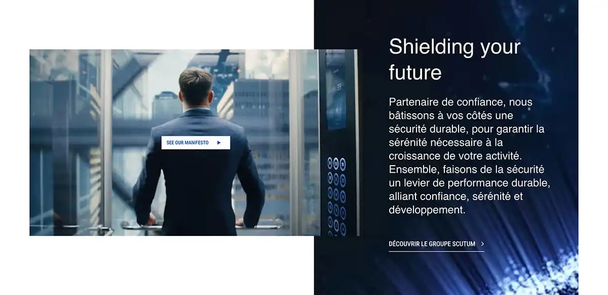

Project Stack
 Drupal
Drupal
Rebranding & Content Implementation in Drupal
Content implementation across multiple page types in Drupal using Mercury Editor, supporting a full rebranding of Scutum's French-language website.
Live Website
Drupal
Scutum went through a full rebranding, and the French-language website needed all-new content across its page types.
As part of the rebranding, I worked within Drupal using Mercury Editor to implement content for the new version of the French-language site. This covered a range of page types — from service and solution pages to client case studies — and involved testing components to make sure they rendered and behaved correctly once populated with real content.
The result was a French-language site that fully reflected the new brand — with content in place across page types and components verified to work correctly, giving the team a solid, tested foundation ahead of launch.